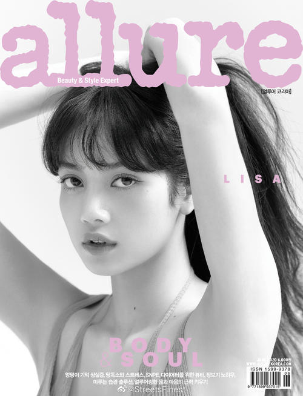
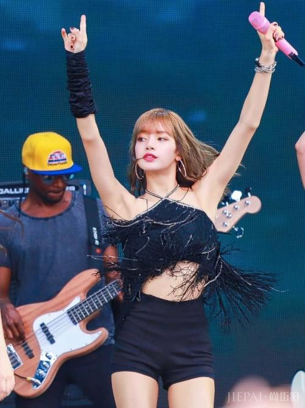

LISA (ล ล ิ ษ า ม โ น บ า ล, Lalisa Manoban, 라 리 사 마 노 반), was born on March 27, 1997 in Thailand in the southern province, in South Korea Thai singer, the development of women's singing group BLACKPINK members. In 2016, she made her debut as a member of Blackpink and released her first single album Square One. On November 1, the group released their second single album "Square Two". In December, she won Best of Next and Best MV in Mnet Asian Music Awards with her group. On July 20, 2017, the group held its first overseas Showcase in Budokan, Japan, and officially announced its debut in Japan. On August 30, the group officially released their Japanese music album "BlackPink". From July 24, 2018, the group held their first Japanese Tour "Blackpink Arena Tour 2018" after their debut. In January 2019, the band will kick off their Blackpink 2019 World Tour with Kia [In Your Area] WORLD TOUR IN Bangkok. On March 12, 2020, the second season of the variety show "Youthwith You", which I participated in as a dance instructor, was launched on iQIYI.
Lisa has attracted a lot of attention with her outstanding body proportion and appearance. She has distinctive assertiveness, handsome and sexy, which exudes the charm of Girl Crush. In addition to her mother tongue, Lisa also has a good command of Korean, English and Japanese, which makes her an international talent. She also draws attention with her perfect proportions and exotic charm. She has shown her talent in dancing since she was young. After training, she has developed her outstanding strength in dancing. She also has advantages in language. In her personal portraits, she exudes a charisma full of personality, as well as exoticism and mystery.
 